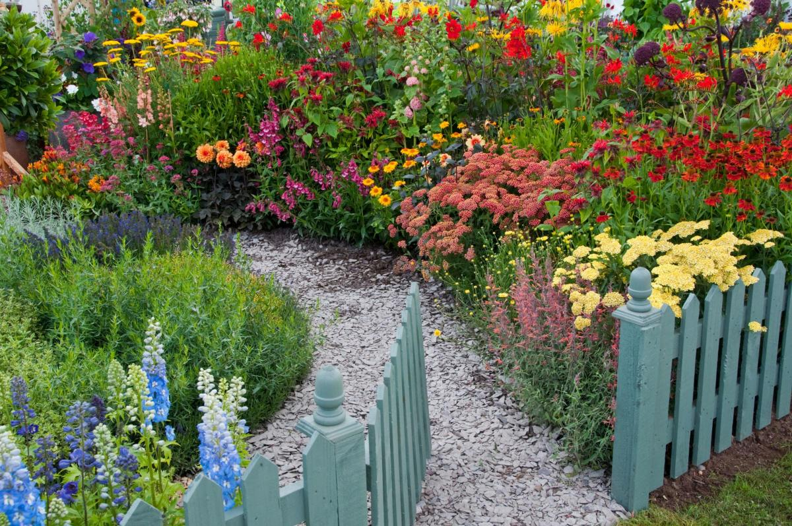

GERTRUDE'S GARDEN
Gertrude's Flower Garden, 20-08-2022
About Gertrude
Gertrude was an avid home gardener who first discovered her passion as a young child. She first began her journey with a humble spider plant in a tiny pot and incredibly, her interest in gardening took flight! Since then, she has grown a great variety of plants that includes indoor plants, home produce, flowers, and more!
Gertrude's Mission
After establishing her garden in her expansive back- and front yard, she decided to share her gardening knowledge and experience with others so they could start their very own home garden too! She believes this is one of the first steps ordinary people can take in order to achieve a more sustainable society. As industrial mass production continues to harm the environment, Gertrude has been trying to reduce the impacts by encouraging people to grow their own produce and plants right at home.
Our Mission
That is Gertrude's dream. And we at Gertrude's Garden are here to help Gertrude fulfil her dream! We work closely with Gertrude herself to ensure that her exact words are displayed for everyone to gain knowledge from. We, like Gertrude, are dedicated to sharing her dreams and working towards a more sustainbly-minded society! By engaging in our site, we are grateful to see that other are supporting Gertrude's cause!
Naturally, we are always available to help you in any field of gardening! If you would like some personal aid for your gardening troubles, or have any burning questions, feel free to contact us at gardens@gertrude.com or through +997 4728 XXXX!